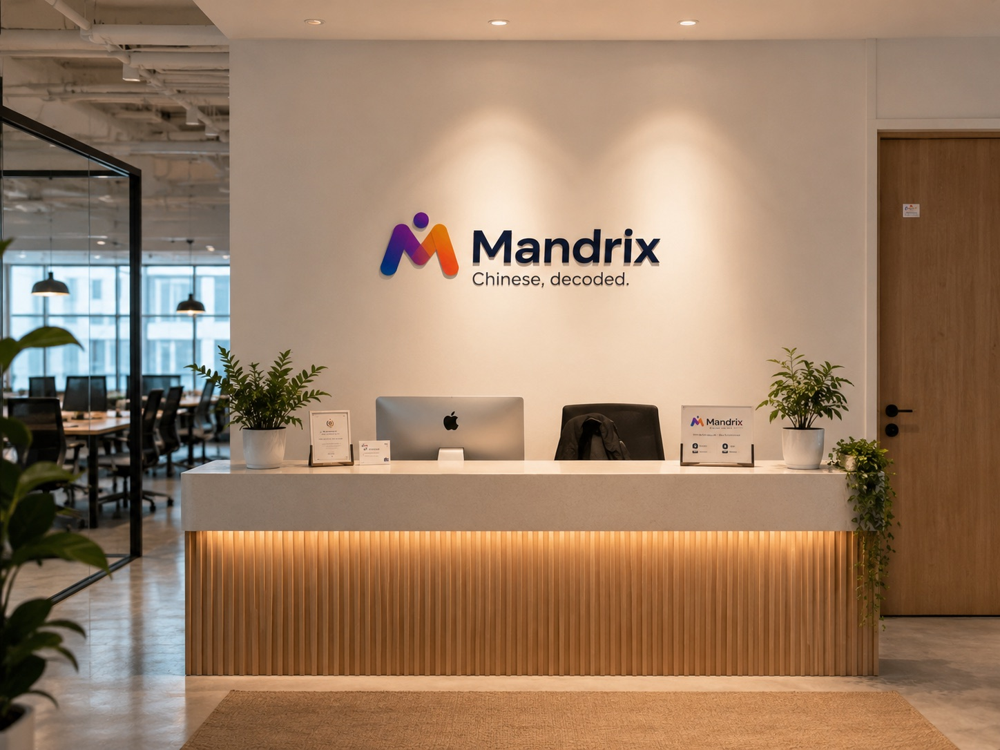

Factories can tell when your message is machine-translated. One wrong word can turn a sample request into a bulk-order misunderstanding.
Mandrix | Chinese for Sourcing
Stop losing money to bad supplier communication.
Learn the exact Chinese phrases and negotiation patterns that get you better MOQs, faster samples, and fewer quality issues — without years of study.
Mandrix is built for Amazon sellers, importers, buyers, and cross-border teams who need to talk to Chinese factories directly. You do not need generic Mandarin. You need sourcing Chinese that works inside 1688, Alibaba, WeChat, trade fairs, and factory follow-up.
Free 8-minute sourcing audit
Get a personalized supplier-message report.
Paste a real message or describe your sourcing problem. Mandrix shows what sounds unclear, weak, too direct, or translated.
✓ Cut Google Translate mistakes that cost money
✓ Talk to 1688 factories without middleman markup
✓ Negotiate like someone who knows the game
8 minutes · No payment required · Paid sourcing programs from $149
Before · translated
Can you cheaper? If no, I change factory.
Sounds abrupt. Low trust. Weak leverage.
After · deal-ready Chinese
如果数量增加，价格还有空间吗？
If quantity increases, is there still room on price?
One pattern becomes inquiries, MOQ negotiation, sample follow-up, and quality messages.
Sourcing-firstnot generic tutor Chinese
Founder-ledJane Chen, M.Ed. curriculum
1688 / WeChatreal supplier message practice
Templatesoutputs you can use today
Online1-on-1 or small team lessons
Free Sourcing Communication Audit
Find out exactly what is costing you money in supplier messages.
An AI-assisted audit for sellers and buyers. It checks whether your Chinese or translated supplier message sounds clear, professional, negotiable, and specific enough to get useful factory replies.
Mandrix
Chinese for Sourcing
Your report is being saved and emailed.
Audit to action
The report does not stop at a score. It becomes your first supplier script.
Mandrix uses the audit to locate the communication issue, show evidence from your message, and turn it into a practice task Jane can refine in live lessons.
Clarity, tone, leverage, next action, sentence structure, and optional voice evidence.
Turn blunt translation into a supplier-ready inquiry, MOQ question, sample request, or quality follow-up.
Your branded report is emailed to you so Mandrix stays tied to the problem you actually need to solve.
If the diagnosis is accurate, live lessons turn the same pattern into templates you can use with real factories.
The Mandrix Sourcing Method
A system for supplier communication, not random phrase collection.
Most sellers do not need a full academic Chinese course before they can source better. They need a controlled system: learn how supplier messages are structured, understand how factories read tone, and leave each lesson with a reusable communication asset.
One pattern becomes inquiries, negotiations, sample follow-ups, and delivery checks.
Understand what sounds serious, polite, vague, weak, or like a beginner buyer.
Leave with scripts, corrected messages, and a next step that keeps the deal moving.
Try a sourcing mini lesson
A supplier says: “这个价格不行。”
Most sellers either beg for a discount or sound too hard. Mandrix trains sentence structure and negotiation tone together.
Understandable, but too blunt for many supplier conversations.
If the quantity increases, is there still room on price?
You are not begging for a discount. You are creating a business condition.
Then change 数量 to 样品, 包装, 交期, or 付款方式 and build a new supplier-ready sentence.

Jane Chen
Lead Educator & Founder, Mandrix
B.A. Chinese Language & Literature
M.Ed. Curriculum & Instruction
5 years teaching experience
Founder
The teacher who turns supplier Chinese into a system.
Jane holds a B.A. in Chinese Language & Literature and an M.Ed. in Curriculum & Instruction, with 5 years of experience teaching adult Chinese learners. Mandrix grew from one practical question: why do so many capable adults still sound translated, vague, or too direct when the conversation matters?
For sourcing students, that question becomes concrete: how do you ask for MOQ, sample quality, delivery timing, price conditions, and factory follow-up in Chinese without sounding like a beginner buyer? Jane turns those moments into structured lessons, corrected scripts, and reusable templates.
✓ Logic-first teaching: every rule generates sentences, not just examples.
✓ Native standard Mandarin with precise pronunciation and tone correction.
✓ M.Ed. curriculum design applied to every lesson plan.
✓ 5 years teaching experience with adult learners who need structure, not random practice.
✓ Sourcing, Business, HSK, and daily paths under one coherent method.
✓ Future Mandrix-certified instructors follow Jane's exact curriculum framework — no random tutor lessons.
Ready to test the sourcing method?
Get My Free Sourcing Audit
Start with the free audit, then turn one real supplier-message problem into a corrected plan.
B.A. Chinese Language & Literature
M.Ed. Curriculum & Instruction
5 years teaching experience

A real learning brand, not a marketplace profile
Designed around clarity, correction, and structured progress.
Mandrix gives adult learners a calm place to understand Chinese clearly before investing in a full learning path.
Results
Real seller situations Mandrix is designed to fix.
Anonymized sourcing scenarios for positioning and curriculum clarity. Replace with authorized proof assets as soon as real student screenshots, recordings, or order examples are available.
Before
Paying a sourcing agent just to communicate with factories. Every message took too long because the seller was afraid the translation sounded wrong.
After 8 lessons
Direct messages to factory owners with corrected inquiry and follow-up templates. The seller could compare quotes without hiding behind a middleman.
Amazon seller · United States · Home goods
Before
The factory kept quoting a high MOQ. The buyer knew the target number but did not know how to push back without sounding rude.
After 4 lessons
Used conditional negotiation patterns instead of blunt discount requests. The conversation moved from “no” to quantity, sample, and future-order options.
E-commerce founder · United Kingdom · Beauty
Before
Quality issues took 3+ rounds of WeChat translation to explain. The factory kept saying “this is normal,” and nothing changed.
After 12 lessons
Clear defect descriptions, evidence language, and repair requests. The buyer could ask for rework without turning the conversation into conflict.
Brand operator · Germany · Apparel
What you learn first
The communication system behind every supplier message.
The course is not a pile of “useful Chinese phrases.” It trains the small set of structures that appear again and again in sourcing: asking, confirming, pushing back, softening tone, and getting a clear next step.
Sourcing Sentence Engine
For sellers who need to build supplier messages instead of copying random templates.
- Inquiry structure
- MOQ and sample questions
- Price conditions
- Delivery and payment sequence
- Reusable message frames
Factory Mindset Translation
For buyers who need to sound serious, clear, and commercially realistic.
- What sounds like a real buyer
- How factories read vague requests
- Soft pressure without disrespect
- How to ask for real answers
- When “yes” does not mean yes
Deal-Ready Communication
For real WeChat, 1688, Alibaba, factory visit, and trade fair follow-up.
- Polite but firm tone
- Quality issue evidence
- Follow-up after silence
- Trade fair introductions
- Clear next-step closing
Sourcing Programs
Choose the path that matches your sourcing volume.
The public site now focuses on one flagship offer: China Sourcing Communication. Other Mandrix paths still exist, but sellers should not have to choose from a crowded course menu before they know whether the method fits.
$149
For new sellers testing their first product.- 10 ready-to-copy inquiry templates
- MOQ and sample request script pack
- Your first corrected supplier message
- Personalized correction file
Best for: under $10k/month sourcing volume or first product launch.
Start with Starter$299
For sellers who need more than a test but are not ready for a full program.- Inquiry, MOQ, sample, and delivery message set
- 6 corrected supplier conversations
- 1688 / Alibaba wording checklist
- Upgrade credit toward Core within 14 days
Best for: first reorder, early supplier shortlist, or one urgent sourcing project.
Choose Bridge$599
For serious sellers sourcing multiple products.- Complete sourcing template library with 40+ patterns
- 1688 keyword and factory-identification language
- Quality issue and rework communication scripts
- Progress tracker, correction archive, and email support
Best for: $10k-$50k/month sourcing volume and repeated supplier communication.
Join Core Program$1,099
For established brands with ongoing sourcing needs.- Everything in Core, plus advanced negotiation
- 2 live supplier-message review sessions
- Custom industry vocabulary pack
- Priority corrections and team upgrade option
Best for: $50k+/month sourcing volume, factories, or team workflows.
Go Intensive
Pricing logic
Start small, upgrade only when the sourcing problem is real.
The ladder is designed for early trust: $149 validates the method, $299 builds the first supplier-message system, $599 is the main working program, and $1,099 is for ongoing sourcing. Every paid plan produces usable templates, correction files, and sourcing language you can apply immediately.
Other Mandrix learning paths
Daily communication, travel, relocation, relationships, local services, and basic conversation. Starter from $89.
HSK 3.0 preparation that connects exam grammar with usable Chinese. Starter from $89.
Meetings, professional small talk, WeChat follow-up, proposals, and business tone. Starter from $129.
Small-team Chinese programs using Jane's curriculum framework and shared lesson assets. Consultation required.
Every lesson leaves an asset
What you take away from every lesson
Every Mandrix lesson produces something reusable, not just more class time.
Your repeated mistakes are recorded by pattern, not forgotten after class.
Scripts, sentence frames, WeChat messages, email structures, or speaking outlines.
The core logic, examples, corrections, and next practice task.
What is stable, what is still weak, and what to fix next.
FAQ
Questions sellers usually ask before joining.
Clear answers for Amazon sellers, importers, buyers, and sourcing teams before they invest in supplier communication training.
Do I need to know Chinese already?
No. The program starts from the practical language used in sourcing: inquiries, MOQ, samples, price, delivery, and quality follow-up. We do not waste the first stage on random characters or school-style vocabulary.
How is this different from using Google Translate?
Google Translate gives you words. Mandrix trains strategy, tone, and structure. Factories can often sense machine translation, especially when the message is vague, blunt, or missing the right business condition.
How long until I can use something?
Most students can use corrected inquiry or MOQ language after the first 3 lessons. The Core program takes 8 weeks because it builds a complete sourcing template library, not just a few phrases.
Will this work for my product category?
Yes. The core sourcing flow works across categories: ask, compare, negotiate, confirm, follow up, and fix problems. Intensive students can add a custom vocabulary pack for their product category.
Do I need to learn Chinese characters?
Not immediately. You can begin with pinyin, spoken practice, and message templates. Reading becomes useful for 1688 research later, but the first goal is to communicate clearly with suppliers.
How is this different from hiring a translator or sourcing agent?
A translator solves one message. A sourcing agent may charge a percentage of every order. Mandrix trains your own communication ability so you can understand what is being said, ask better questions, and keep more control.
What if I am new to Amazon or import/export?
Starter is the right entry point. You learn the first supplier messages, common MOQ and sample questions, and the tone mistakes that make new buyers look unprepared.
Can Mandrix help me prepare for the Canton Fair and supplier meetings?
Yes. The sourcing program covers supplier introductions, product questions, sample requests, factory visit language, booth conversations, and post-meeting WeChat follow-up.
Can my team use this?
Yes. Intensive includes a team upgrade option, and teams of 5+ can request a custom corporate program based on Jane's curriculum framework.
Are lessons online?
Yes. All lessons are live 1-on-1 or small group classes online. After your booking and payment are confirmed, Jane will send your meeting link by email, WhatsApp, or Telegram.
How does payment work?
Choose your program, complete PayPal Business checkout, then submit the booking form. Mandrix attaches the PayPal order ID automatically and sends your class schedule and video classroom link by email.
Can I reschedule?
Please contact Jane at least 24 hours before class. The new class time will be arranged based on available time slots.
What if I do the free audit and decide not to continue?
That's fine. The audit is designed to give you a useful first read on your supplier communication. Paid lessons are only for people who want Jane to turn that diagnosis into corrected templates and practice.
Do you promise lower prices or better supplier terms?
No honest course can guarantee supplier outcomes. Mandrix trains the language, tone, and message structure that help you communicate more clearly and professionally. Your final deal still depends on product, volume, supplier, timing, and negotiation context.
How long are course plans valid?
All course plans are valid for 3 months. Private Intensive plans are valid for 6-12 months. You have enough time to complete lessons without rushing.
Still deciding?
Start with your free sourcing communication audit.
Paste a real supplier message or describe your sourcing problem. Get a branded report, then book Jane if you want corrected templates and a course plan.
Trust & policy
Clear rules before you pay.
Mandrix is a founder-led education brand. Payment, privacy, AI use, and realistic sourcing-communication expectations are explained before checkout.
Your audit answers, supplier-message samples, booking details, and contact information are used for reports, scheduling, email, and lesson support.
Read Privacy PolicyPayPal handles payment details. Mandrix stores order references only to match payment with the correct booking.
Read TermsThe free audit is an initial communication diagnosis, not legal, sourcing, factory due-diligence, or guaranteed negotiation advice.
Start Free AuditMandrix provides language structure, correction, and templates. Supplier outcomes depend on product, volume, supplier, timing, and follow-through.
View ResultsChoose Time
Choose a time that can become your regular class slot.
After you submit the form, the system builds your schedule from your selected program, first date, time slot, and frequency.
Your selection determines the payment amount and how many lessons are included in the first schedule.
Your date, Beijing time slot, and frequency are used to generate future lessons.
Jane will review your request and confirm the final timetable with your meeting link.
Ready to stop guessing with suppliers?
Start with a free sourcing communication audit.
Find the message pattern that may be costing you clarity, speed, or leverage before choosing a paid program.
Response within 24 business hours · Daily availability: 8:00 AM – 11:30 PM Beijing Time (UTC+8)
✓ Supplier-message readiness score
✓ Custom route for sourcing, trade fair, or factory follow-up
✓ Clear next step before you pay
Start here
Start with the sourcing path.
Use these pages to move from supplier-message diagnosis to a focused sourcing communication plan.